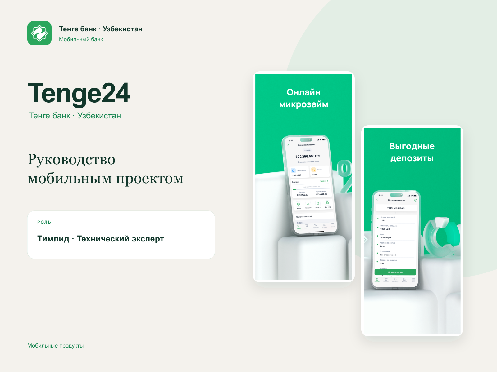
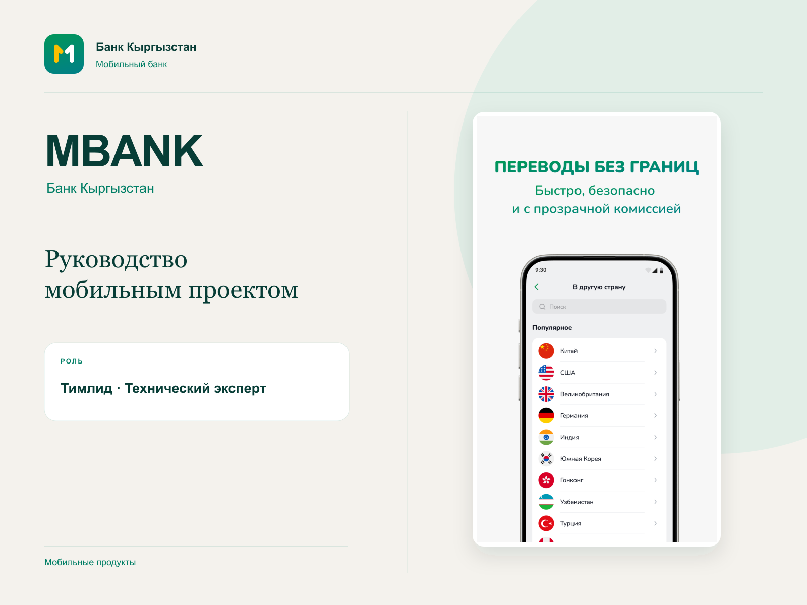
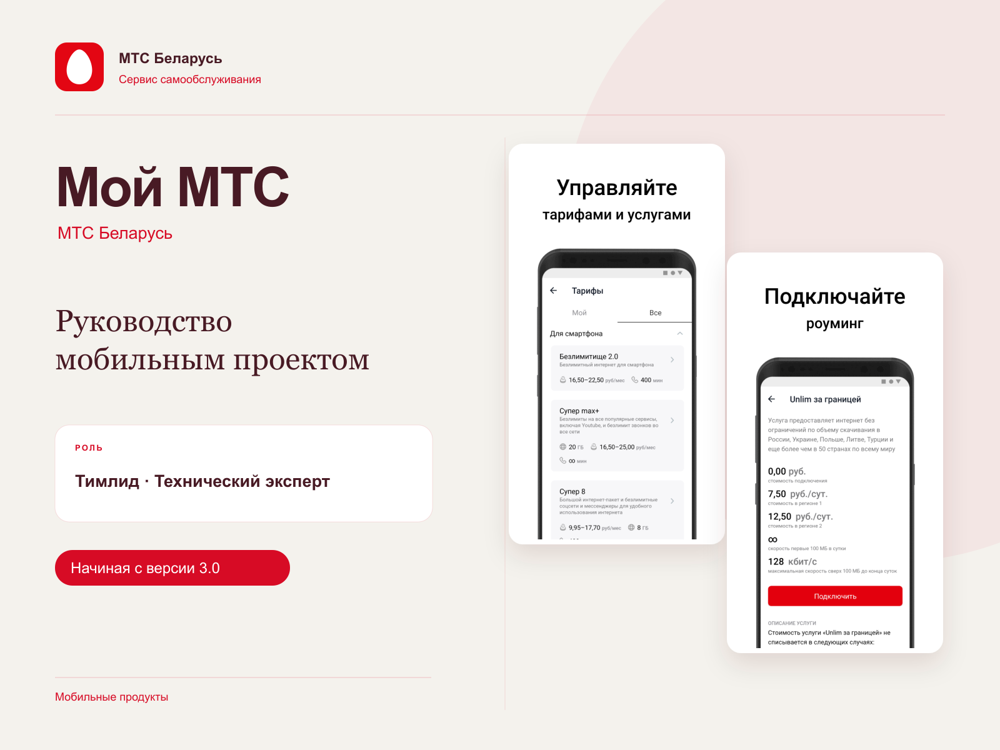

01↗Техническое руководство · архитектура · команда
Нативный мобильный банк. iOS — Swift, Android — Kotlin.
AGENTIC SYSTEMS / SOFTWARE ARCHITECTURE
Я Андрей Карабань. Последний год создаю корпоративные агентские системы и автоматизирую разработку. Соединяю агентов, архитектуру и инженерный контроль в работающий процесс.
Открыт к предложениям · удалённо
01 / ГЛАВНЫЙ КЕЙС
В многомодульном проекте написать код — только часть работы. Процесс должен найти владельца поведения, сохранить границы архитектуры, проверить изменение и подготовить его к публикации.
Я выстроил требования, правила работы, роли агентов и передачу контекста между этапами. Система учитывает корпоративные ограничения, активные зависимости и процессы CI/CD. За инженером остаются архитектурные решения, согласования и контроль результата.
Архитектура, процесс и доказательства →Исходники кейса на GitHub ↗Из ссылки на Jira извлекаются требования и критерии приёмки. Неясности разрешаются до изменения кода.
task: DEMO-001 / status: intake
Учебный сценарий. Переключение этапов показывает процесс, а не запускает агентов или подключение к Jira.
Запустить воспроизводимый пример ↗02 / ОПЫТ ЗАПУСКА ПРОДУКТОВ
Мобильные продукты, которые команды разработали с нуля и запустили под моим техническим руководством.

01↗Техническое руководство · архитектура · команда
Нативный мобильный банк. iOS — Swift, Android — Kotlin.

02↗Техническое руководство · архитектура · команда
Мобильный банк на Flutter. Формирование команды, архитектура и запуск.

03↗Техническое руководство · архитектура · команда
Новая версия приложения МТС Беларусь, начиная с 3.0. Flutter.
03 / МОЙ ПОДХОД
С 2014 года прошёл путь от iOS-разработчика до CTO, Mobile Lead и архитектора. Строил команды примерно из 20 человек, проводил собеседования, менторил инженеров и отвечал за технические решения.
Маршрутизация задач, роли агентов, handoff, MCP-сервисы и интеграции CLI.
Модульные границы, зависимости, клиент-серверное взаимодействие и спецификации.
Команды с нуля, пресейлы, найм, развитие инженеров и запуск продуктов.
04 / ПОЛНЫЙ КАТАЛОГ
20 проектов: сайты, мобильные приложения, айдентика, товарные визуалы, видео, тексты и инструменты. Откройте работу, чтобы посмотреть задачу, мой вклад, результат и материалы.
СЛЕДУЮЩИЙ ЭТАП
Приоритет — агентские системы, автоматизация и архитектура. Рассматриваю также Software Architect и Mobile Lead. Удалённо; офис и гибрид — Минск. Английский — B1.